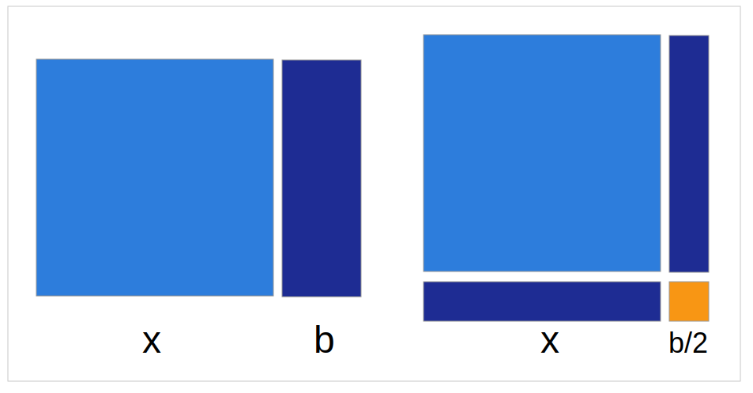

On Beauty
What is beauty?
surely we’ve all had the experience of thinking about a word—‘ pen,’ say— and of sort of saying the word over and over to ourselves until it ceases to denote; the very strangeness of calling something a pen begins to obtrude on the consciousness in a creepy way, like an epileptic aura. -- David Foster Wallace
What beauty means
beauty: noun ( pl. beauties )
- a combination of qualities, such as shape, color, or form, that pleases the aesthetic senses.
Beauty is
Beauty is
Beauty is simplicity
- (in software)
How do we know if anything is any good?
- most of our problem
- after we have basic skill we must learn discernment
Beauty is a clue
Is it that what is good is beautiful or is it that what is beautiful is also good?
Shaving Yaks with Occam's Razor
- Occam's razor, doesn't necessarily apply to nature.
- no reason nature must be simple
- We hope nature is simple
- Code, artificial by nature: Occam's Razor holds
Occam version 1
Something which is simpler is more likely to be true
Occam version 2
Something which is beautiful is more likely to be true
Aesthetic senses
- what is good is beautiful
- we can spot what is beautiful
- we need to develop the aesthetic senses
Simplicity is beauty
Art
- as usual, it leads the way
An early need to capture form
Architecture: Ludwig Mies van der Rohe
- extreme clarity and simplicity
- modern materials could support themselves
- the structure is the form
- "skin and bones"
Farnsworth house
Farnsworth house
Barcelona chair
Music: Erik Satie
Sculpture: R. R. Wilson
Writing: Antoine de Saint-Exupéry
A designer knows he has achieved perfection not when there is nothing left to add, but when there is nothing left to take away. -- Antoine de Saint-Exupéry
I spent the morning putting in a comma and the afternoon removing it. -- Gustave Flaubert
More matter with less art. -- Shakespeare
Math: always talking about beauty
The chief forms of beauty are order and symmetry and definiteness, which the mathematical sciences demonstrate in a special degree. -- Aristotle
Beautiful proofs
Pythagorean theorem
Completing the square

Platonic solids


e - the natural number
Physics: always talking about beauty
Eightfold way
Simple parts
Murray Gell-Mann
Three principles — the conformability of nature to herself, the applicability of the criterion of simplicity, and the "unreasonable effectiveness" of certain parts of mathematics in describing physical reality — are thus consequences of the underlying law of the elementary particles and their interactions. Those three principles need not be assumed as separate metaphysical postulates. Instead, they are emergent properties of the fundamental laws of physics.
(named "quarks" among many other things)
Wittgenstein
Well, what would it look like if it had looked as if the earth were rotating?
Symmetry
Programmers: always talking about beauty
There are two ways of constructing a software design: One way is to make it so simple that there are obviously no deficiencies, and the other way is to make it so complicated that there are no obvious deficiencies. -- C.A.R. Hoare
There's a whole book
Dijkstra's Algorithm

Tying the knot
data DList a = DLNode (DList a) a (DList a)
mkDList :: [a] -> DList a
mkDList [] = error "must have at least one element"
mkDList xs = let (first,last) = go last xs first
in first
where go :: DList a -> [a] -> DList a -> (DList a, DList a)
go prev [] next = (next,prev)
go prev (x:xs) next = let this = DLNode prev x rest
(rest,last) = go this xs next
in (this,last)Summary
Complexity is burying us and is seemingly insurmountable.
The good news is that we all have built-in beauty detectors.
We can sense what is wrong. We must listen to that feeling if we are to produce things which are simple and beautiful.
Why have I belabored this?
- A confession
Quote
"Simplicity is not an objective in art, but one achieves simplicity despite one’s self by entering into the real sense of things." -- Constantin Brancusi (via Rich Hickey)
Me
- Chris Wilson
@twopoint718- Bendyworks
- Madison, WI, USA, Earth